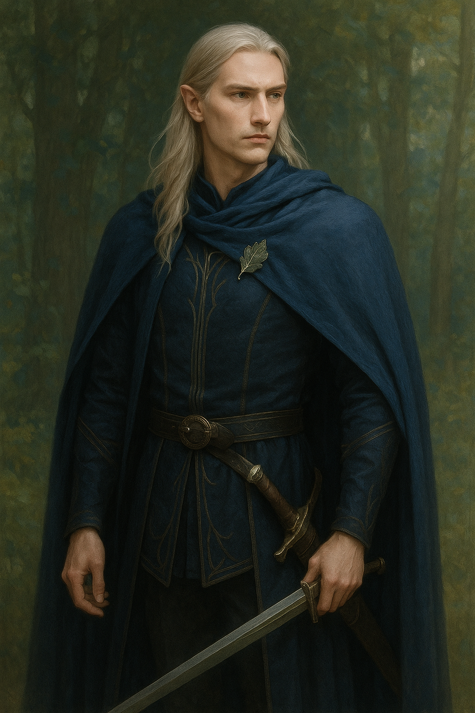

“A luz da floresta vive em mim, e nela encontro força para proteger o que ainda floresce.”
Thalion nasceu nas últimas gerações élficas de Doriath antes de sua queda, descendente de guerreiros que serviram Thingol e Melian. Após a ruína de Doriath, sua família exilou-se em Lindon, onde ele foi treinado entre os sábios e guerreiros élficos sob a tutela de Gil-galad.
Filho de Elenar e Maerwen, ambos mortos por orcs ao proteger refugiados. Thalion carrega o legado de honra e sacrifício, mantendo viva a memória de Doriath e os ensinamentos de seus ancestrais.